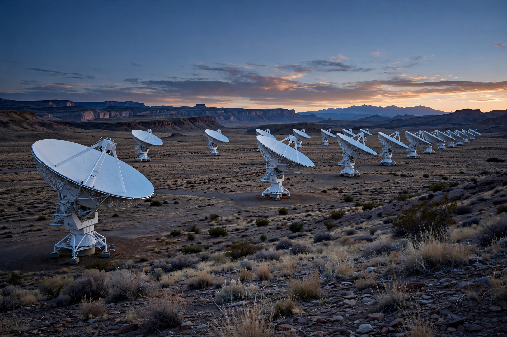

Aperture synthesis or synthesis imaging is a type of interferometry that mixes signals from a collection of telescopes to produce images having the same angular resolution as an instrument the size of the entire collection. At each separation and orientation, the lobe pattern of the interferometer produces an output that is one component of the Fourier transform of the spatial distribution of the brightness of the observed object. The image (or "map") of the source is produced from these measurements.

Astronomical interferometers are commonly used for high-resolution optical, infrared, millimeter, submillimeter, and radio observations. For example, the Event Horizon Telescope project derived the first image of a black hole using aperture synthesis observations from telescopes positioned across the globe. The technique relies on the van Cittert–Zernike theorem: pairs of antennas sample individual spatial frequencies (baseline components) of the sky brightness distribution, and Earth's rotation sweeps the baselines through different orientations, filling in the Fourier plane over time.
Aperture synthesis was first developed at Cambridge University by Martin Ryle and collaborators in the 1950s. Ryle and Antony Hewish shared the 1974 Nobel Prize in Physics in part for this work — Ryle for his observations and inventions, notably the aperture-synthesis technique, and Hewish for his role in the discovery of pulsars. The One-Mile Telescope and later the 5-km Ryle Telescope demonstrated the power of Earth-rotation synthesis.
Major synthesis arrays include the Very Large Array (VLA) in New Mexico, the Atacama Large Millimeter/submillimeter Array (ALMA) in Chile, the Low-Frequency Array (LOFAR) in Europe, and the forthcoming Square Kilometre Array (SKA). The technique is also used in radar imaging (synthetic-aperture radar) and in medical and geophysical imaging.